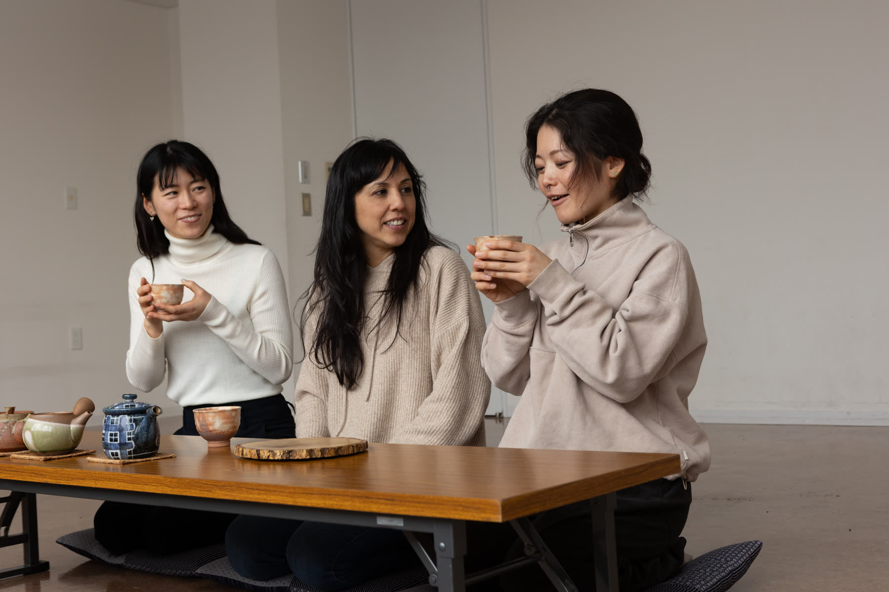
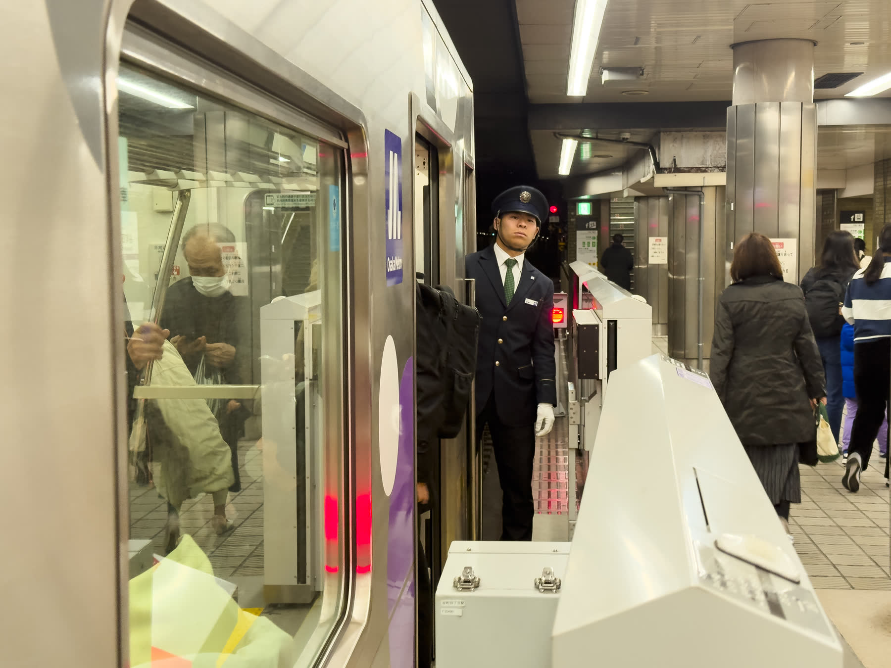
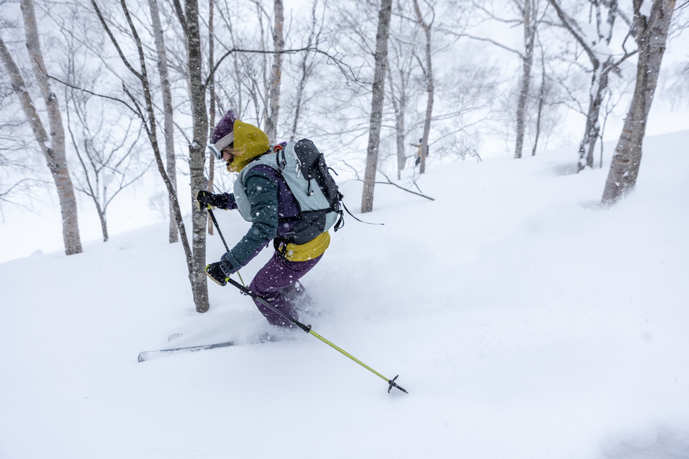
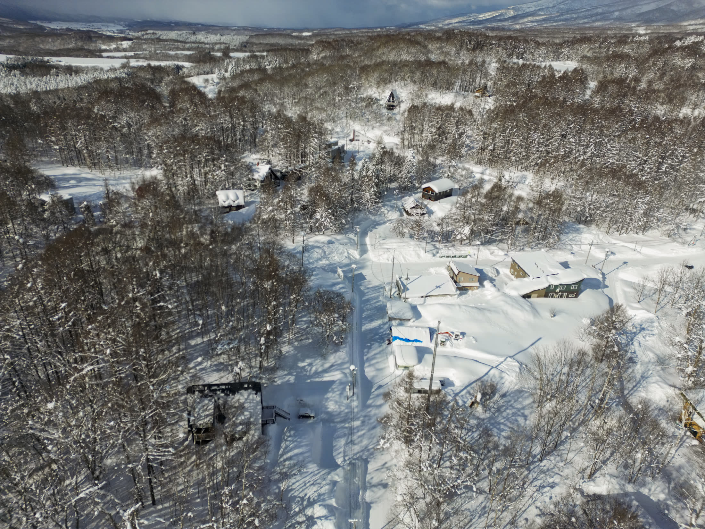

Regional dispersal
Connect places through clear routes, transport and reasons to stay longer.

Prepared for Japan National Tourism Organization · FITUR 2027
A campaign designed to turn Spanish interest in Japan into longer, higher-value journeys across its regions.
Every image is original work by Juan Aizpuru, photographed in Japan.
JNTO Spain · The opportunity
The proposal supports first-time travel from Spain, greater visitor spending and discovery beyond the best-known route. It turns unfamiliar regions into desirable, realistic journeys.
Connect places through clear routes, transport and reasons to stay longer.
Build desire around nature, food, craft, wellbeing and local exchange.
Shape stories around the motivations of priority audiences in Spain.
Original work in Japan
Juan brings more than 15 years of photography and film production, plus previous field experience in Japan. The new production can focus immediately on regional access and campaign usefulness.




What JNTO can commission
Photography and film produced around selected regions and Spanish traveller motivations, prepared for activation by JNTO and its partners. JNTO defines the audience, regions and use; we lead the visual production.
Concept, regional research, local production and campaign adaptations developed with JNTO Madrid or its appointed advertising or PR agency.
Scope, formats and rights are defined after JNTO identifies the priority market objective.
A local production model
Priority audience, regions, season and conversion goal.
Creative treatment, regional research and local production plan.
Regional guides, producers and local participants provide real access.
Final assets ready for JNTO, agencies, media and travel partners.
A 20-minute conversation at FITUR
We can identify the Spanish audience, regional story and contracting route, then return with a tailored campaign treatment for JNTO Madrid or its agency.